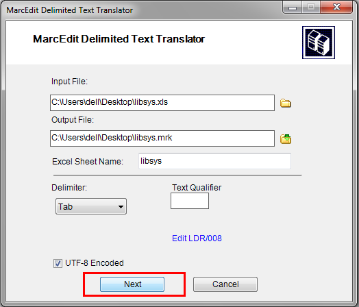
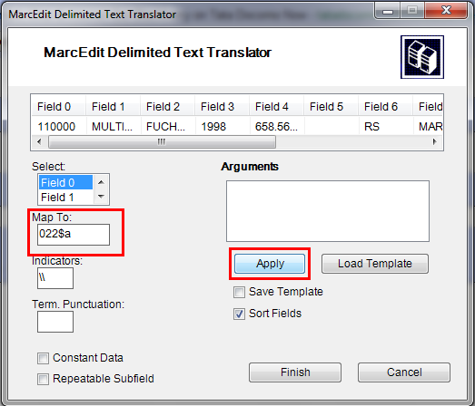
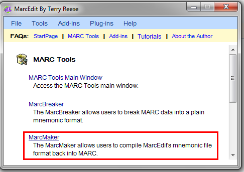
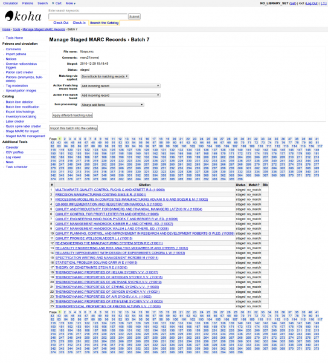

Using third party software with Koha
MarcEdit
Many libraries like to use MarcEdit for modifications or data cleanup. If you’d like to do this you will need to download it at: http://marcedit.reeset.net/
Important
Many of the actions described in this chapter can be done in Koha using Marc Modification Templates, but this section is here for those who are used to MarcEdit.
Adding a prefix to call numbers
When bringing data into Koha, you may want to first clean it up. One common action among Koha users is to add a prefix to the call number.
Open MarcEdit

Click ‘MarcEditor’
Go to Tools > Edit Subfield Data

To prepend data the special character is: ^b To simply prepend data to the beginning of a subfield, add ^b to the Field Data: textbox and the data to be appended in the Replace

To prepend data to the beginning of the subfield while replacing a text string, add ^b[string to replace] to the Field Data textbox and the data to be appended in the Replace With textbox.
Importing Excel data into Koha
Suppose you have records of your library in excel data sheet format and want them to import into Koha. But how will you do this? Koha will not let you import excel records directly. Well here is a very simple solution for you which will let you import your excel records in Koha easily. First, we will convert excel file into Marc file and then will import it into Koha.
Follow the given steps to import your excel records into Koha
Converting from Excel format into .mrk format
First, we will convert excel format into .mrk format. For this we will use MarcEdit. You can download it from http://marcedit.reeset.net/
Now open it and select Add-ins–>Delimited Text Translator.

Click Next when the following window appears.

Browse for your excel file.

Locate your excel file by choosing the format Excel File(*.xls).

Similarly, fill all the other entries such as Output File, Excel Sheet Name and check UTF-8 Encoded (if required) and Click Next.

Now you will be prompted for mapping the fields to recognise the fields by standard marc format.
Suppose for Field 0 that is first column I entered Map to: 022$a( Valid ISSN for the continuing resource) and then click on Apply.

Note
You can customize Indicators and all other things, for more information on marc21 format visit the official library of congress site.
Similarly map all other fields and then Click on Finish.

And then a window will appear indicating that your Marc Text File(*.mrk) has been created.

Click Close and we have created a .mrk file from .xls file in this step. You can view the file by double clicking on it.
Convert .mrk file to .mrc
We will convert .mrk file that we have created in the above step into raw Marc format that can be directly imported into Koha.
For this again open MarcEdit and Select MARC Tools.

Next Select MarcMaker to convert .mrk file into .mrc format.

Locate your input file and name your output file. Then Click Execute.

And it will show you the Result.

Click Close and now we have raw Marc records with us (.mrc file).
Import .mrc into Koha
More information on importing records into Koha can be found in the ‘Stage MARC records for import’ section of this manual.
Finally we will import above created .mrc file into Koha.
Click on Tools in your Koha staff client.

Next Click on Stage MARC Records for Import.

After this, choose your previously created .mrc file and click on Upload.

You can also add comment about file and finally click on Stage For Import.

When the import is done, you will get a result something like this

Next, click on Manage staged records.
Here you can even change matching rules.

Click on Import this batch into catalog when you are done.
Thats it. After all the records get imported, check Status and it should read “imported”

You can even undo the Import operation.
And within few minutes, we have imported around 10,000 records in Koha
OCLC Connexion Gateway
Koha can be set to work with the OCLC Connexion Gateway. This allows libraries to use OCLC Connexion as their cataloging tool and simply send those records to Koha with a single click. The following instructions will help you set up the OCLC Connexion Gateway, if you have a system administrator you will want to consult with them on this process.
Setting up OCLC service on Koha
First, you’ll need to create a file somewhere on your system with configuration information. You could put this anywhere that is visible to the account that will be running the service.
The file contains 11 lines. The first 6 will be about your Koha system:
host: The IP address of your Koha server
port: The port you want to use for the Connexion service. This port must be different from your SIP port, or any other service
koha: The full URL of your staff client
log: The location (full file specification) of your log for the service
user: The default Koha username to use for importing
password: The password that goes with that username
The remaining lines describe how to do the staging:
match: The name of the matching rule from your system to use
overlay_action: "replace", "create_new", or "ignore"-- what to do if there is a match
nomatch_action: "create_new" or "ignore"-- what to do if there is no match
item_action: "always_add","add_only_for_matches","add_only_for_new", or "ignore" -- what to do with embedded 952 item data
import_mode: "direct" or "stage"
A sample file would look like this:
host: 1.2.3.4
port: 8000
log: /home/koha/koha-dev/var/log/connexion.log
koha: http://kohastaff.myuniversity.edu
user: koha_generic_staff
password: password
match: 001
overlay_action: replace
nomatch_action: create_new
item_action: ignore
import_mode: direct
When choosing an ‘import_mode’ if you use “direct” then the staged record will be immediately imported into Koha, and should be searchable after your indexes catch up. If you choose “stage”, then the record will be placed in a staged batch for you to later go the Manage Staged MARC Records tool to finish the import.
If you import multiple records, they’ll be in the same batch, until that batch is imported, then a new batch will be created.
In “direct” mode, each record will be in its’ own batch.
To start the service, run the script:
/location/of/connexion/import/daemon/connexion_import_daemon.pl -d -c /location/of/config/file.cnf
Setting up your OCLC desktop client
Note
Screenshots are OCLC Connexion Client v.2.50, Koha v.3.12
To set up the OCLC Connexion desktop client to connect to Koha, go to Tools > Options, then choose the Export tab.

Click the “Create…” button to set up a new destination, then choose “OCLC Gateway Export” and click OK.
Enter the following information:
“Host Name:” Your catalog’s appropriate IP address (from your config file above)
“Port:” Your catalog’s appropriate port number (from your config file above)
“Login ID:” The cataloger’s Koha login
“Password:” The cataloger’s Koha password
“Notify Host Before Disconnect” = checked,
“Timeout” = 100, “Retries” = 3, “Delay” = 0 (zero),
“Send Local System Logon ID Password” = checked.

Select “OK” when finished, and you should see your new “Gateway Export” option listed (The catalog’s IP address and port are blacked out in the following screenshot)
Gateway Export Added
Click on “Record Characteristics” and make sure that the bibliographic records are using MARC21, UTF-8 Unicode, and click OK to save.
Record Characteristics
You should be ready to go! To export a record from OCLC Connexion Client to Koha, just press F5 while the record is on-screen. The export dialog will pop up, and you’ll see Connexion attempting to talk to Koha. You should get a message that the record was added or overlaid, including its biblio number, and a URL that you can copy into your web browser to jump straight to the record.
Using the OCLC Connexion Gateway
Records can be exported from Connexion either in a batch or one by one.
Exporting records one by one
To export bibliographic records one by one, be sure your “Batch” options are correct: from the “Tools” menu, select “Options”, and select the “Batch” tab. In the “Perform local actions in batch” area, “Bibliographic Record Export” should be unchecked

When ready to export, from the “Action” menu, select “Export” or use the F5 key. You will see a screen similar to the following if the import is successful and if the record is new to the Catalog; you may copy & paste the resulting URL into your Koha catalog to see the new record.

If the record was overlaid, you will see a message to that effect in the “OCLC Gateway Export Status” window
Exporting records in a batch
To export bibliographic records in a batch, be sure your “Batch” options are correct: from the “Tools” menu, select “Options”, and select the “Batch” tab. In the “Perform local actions in batch” area, “Bibliographic Record Export” should be checked

When a record is ready to export, from the “Action” menu, select “Export” or use the F5 key, and it’s export status will be “ready.”
When ready to export the batch, from the “Batch” menu, select “Process batch” and check the appropriate “Path” and “Export” boxes

The export will begin, and the bib records will be exported & imported into Koha one by one; you will see “OCLC Gateway Export Status” windows, as above, showing you the results of each export. That window will stay there until you select “Close,” and then the next record’s export/import will begin. The process will continue until all records in the batch are completed. Then you may or may not see the Connexion Client export report (depending on your Client options for that).
Items in OCLC
If you’d like to create your item records in OCLC you can do so by addding a 952 for each item to the bib record you’re cataloging. The location and item information cataloging guide will break down what subfields you can use in the 952, but at the minimum you want to have subfield 2, a, b, and y on your items.
952 \\$2CLASSIFICATION$aHOMEBRANCHCODE$bHOLDINGBRANCHCODE$yITEMTYPECODE
The subfield 2 holds the classification code. This can be ddc for Dewey or lcc for Library of Congress or z for Custom. Other classification sources can be found in the Classification Sources area in administration
Subfield a is your home library and needs to be the code for your home library, not the library name. You can find these codes in the Libraries administration area.
Subfield b is your holding library and needs to be the code for your holding library, not the library name. You can find these codes in the Libraries administration area.
Subfield y is your item type code. It needs to be the code, not the item type name. You can find these codes in the Item Types administration area.
952 \\$2ddc$aMAIN$bMAIN$yBOOK
In addition to these required fields you can enter any other subfield you’d like. Most libraries will enter a call number in subfield o and a barcode in subfield p as well. Review the Location and item information cataloging guide for a full list of subfields and values.
Talking Tech
Talking Tech I-tiva is a third party, proprietary, product that libraries can subscribe to. Learn more here: http://www.talkingtech.com/solutions/library.
Installation and Setup Instructions
Be sure you’ve run installer/data/mysql/atomicupdate/Bug-4246-Talking-Tech-itiva-phone-notifications.pl to install the required data pack (new syspref, notice placeholders and messaging transport preferences)
To use, TalkingTechItivaPhoneNotification syspref must be turned on.
If you wish to process PREOVERDUE or RESERVES messages, you’ll need the EnhancedMessagingPreferences system preference turned on, and patrons to have filled in a preference for receiving these notices by phone.
For OVERDUE messages, overdue notice triggers must be configured under More > Tools > Overdue notice/status triggers. Either branch-specific triggers or the default level triggers may be used (script will select whichever is appropriate).
Sending Notices File
Add the TalkingTech_itiva_outbound.pl script to your crontab
Add an FTP/SFTP or other transport method to send the output file to the I-tiva server
If you wish, archive the sent notices file in another directory after sending
Run TalkingTech_itiva_outbound.pl –help for more information
Receiving Results File
Add an FTP/SFTP or other transport method to send the Results file to a known directory on your Koha server
Add the TalkingTech_itiva_inbound.pl script to your crontab, aimed at that directory
If you wish, archive the results file in another directory after processing
Run TalkingTech_itiva_inbound.pl –help for more information